卍新纂大日本續藏經 第57冊
No.977 四教儀備釋 (2卷)
【元 元粹述】
第 1 卷
No. 977
天台四教儀備釋上
天台四教儀 高麗沙門
天台山乃智者幽棲行道之地以處命人也雖吾祖生緣得道垂化示寂不在此山蓋為符定光懸記兼展平生志願故事載別傳此山上應三台故名天台舊亦名南嶽俗諺亦稱天梯如輔行一(十七)釋教者效也亦詮理化物為義也教有化儀化法只言四教者通名立題義攝兩種別文云八教合二四以標之耳儀式也舊據釋籤金錍二文以明立題今皆不用高麗東夷之國名沙門乃釋氏之通稱此翻勤息勤行眾善止息諸惡故又沙門復以釋為姓者始自晉安法師增一云四河入海同一鹹味四姓出家皆名為釋顯性錄立四句料簡云一是沙門非釋氏出家外道二是釋氏非沙門在家釋種三是沙門是釋氏兩土之僧四非釋氏非沙門兩土之俗。
天台智者大師(止)亦名五味。
煬帝居藩邸稱晉王從吾祖受戒師謂王曰大王迂遵聖禁宜號總持王云師傳佛燈宜稱智者(具載別傳)判釋者妙樂第一云化儀四教是判教之大綱化法四教乃釋義之網目罄無不盡者一大藏教判釋無遺矣舊於此辨提謂攝屬彼經雖明人天戒善亦三藏收具見玄籤第十(云云)華嚴時從經題立名因行如華莊嚴果德具云大方佛華嚴經此人法喻三具足更有單三複三謂七種立題如妙宗第一(云云)鹿苑亦曰柰苑亦名仙苑如來昔生垂化之地緣載輔行(云云)阿含翻無比法玅玄(十一)云增一明人天因果中明真寂深義雜明諸禪定長破外道而通說無常知苦斷集證滅修道(文)方等從事法立名四教並談曰方四機普益曰等乃調斥之方等也若行法經稱方等典就理得名如釋籤云此以理等名方等典非謂生酥調斥之方等止觀又以四門入清涼池曰方所契之理曰等此約行理合釋今方等時非後二種維摩詰翻淨名亦無垢稱思益梵天所問經楞伽翻不可往楞嚴翻健相三昧翻調直定亦云正受金即法身光即般若明即解脫勝鬘夫人乃波斯匿王女摩訶翻大多勝般若翻智慧(般若五不翻之中一如法數)摩訶般涅槃那飜大滅度如來四十九年說法總成五時頌曰阿含十二方等八二十二年般若談法華涅槃共八年華嚴最初三七日此是別五時更有通五時收經如妙玄第十(二十六)。
言八教者(止)然後出藏通別圓。
不從漸來直說於大時部居初故名頓教中間三味次第調停引小向大故名為漸不思議力一音異解互不相知名秘密教聞小證大聞大證小得益不同名不定教經律論三含藏法義條然不同名三藏教三乘共行利根菩薩通別通圓故名通教獨菩薩法次第斷證別前藏通別後圓教理智斷行位因果一切圓融故名圓教。
第一頓教者(止)約教名兼。
如來者乘如實道來成正覺寂滅三惑究盡二死永亡三惑亦名五住謂見思為四住塵沙無明為一住同居名分段生死方便實報名變易生死四十一位者圓教分真住行向地等覺也妙玄亦云四十一地蓋華嚴列眾菩薩雖多舉地位以總攝如朝廷文武雖多總曰百僚舊據四念處文前無十信後無等覺為難者誤以部中談位難經前列眾也八部者天(一)龍(二)夜叉(三)乾闥婆(四)阿修羅(五)迦樓羅(六)緊那羅(七)摩睺羅伽(八)人非人總結也須喻月者智德漸圓惑暗究盡乃成斷德(云云)盧舍那翻淨滿亦名光明遍照此華嚴教主於道樹下現起尊特修多羅翻契經契理契機也十二部之總名亦別為十二部中第一龍鬼等得預法會以乘急戒緩故法華文句二(二十三)準涅槃開四句如常說。
此經中云(止)如聾若啞等是也。
日出等者妙玄第一明三照准舊譯華嚴二十九寶王如來性起品譬文有四合法有五今家合四為三演三成五以對涅槃十三聖行品相生五味又妙玄第十引法華信解品文用對五味併圖于下。
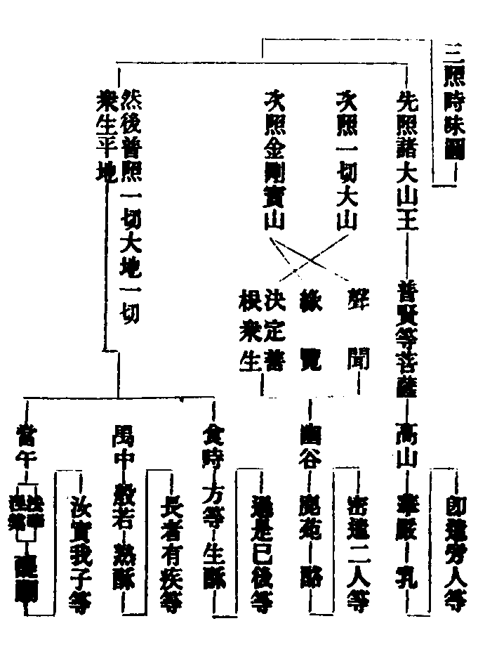
十二部經頌云。
長行重頌并授記 孤起無問而自說
因緣譬喻及本事 本生方廣未曾有
論議俱成十二名 廣如大論三十七
妙玄云大小各具十二部但小乘中說非大乘之義別讓三存九小乘灰斷無方廣經說必假緣無無問自說雖有授記記作佛少又論大乘九小乘十一部為緣別說具在玄文(文六十七)信解品譬喻周後四大弟子具領五時文也即遣旁人等說華嚴教以擬宜也如加被四菩薩說住行向地四十位法慧說十住功德林說十行行金剛幢說十向金剛藏說十地具如釋籤第十聲聞在座如聾若啞謂有耳不聞圓頓教有眼不見舍那身以不見故不能讚歎故如聾啞此同妙玄第一云頓說本不為小小雖在座如聾如啞然準妙玄第十華嚴初分永無聲聞後分則有此似前分有聲聞者別行疏記云以後顯前機未堪大(文下十五)昔慧覺謂前分雖無形服有根性聲聞釋歎者誤矣。
第二漸者(止)事六度等教。
初中終三漸之始寢大施小也約佛意則寢於法華據化儀則寢於華嚴處說不動而遊身論脫珍著弊文互顯耳又不動而遊者妙應無謀大小異見如人覩月東西各行皆有月隨月實不往舍那尊特智定莊嚴故譬珍御丈六應身忍生法惱故譬弊垢謂丈六佛著二忍衣時人以衣長丈六為難者非兜率翻知足六欲并梵世七天之中有內院外院菩薩居內院而降神也摩耶翻天后化乘白象貫白日精自右脇入正慧託胎也大乘則乘旃檀樓閣等出胎四月八日右脇降誕備載瑞應經納妃有三一瞿夷二耶輸三鹿野耶輸生子名羅睺羅出家等者頌云。
十九逾城六苦行 五歲遊歷三十成
說法度生五十年 是則共當八十壽
菩提翻道草座者因果經說帝釋化為吉祥童子以草施佛坐以成道木樹草座皆表三藏詮生滅故劣應者對大乘勝應說也五人者頌云。
頞鞞跋提并俱利 此三屬在父之親
陳如十力母之親 初轉法輪先度此
諸文異出今圖而會之。
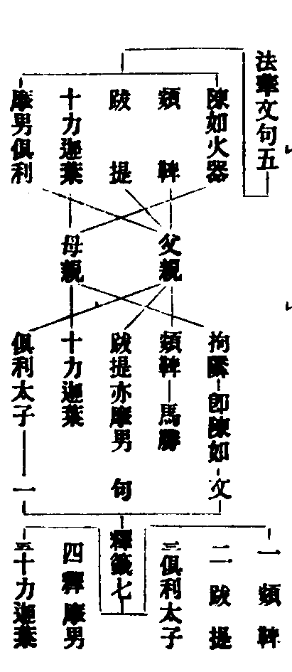
文句第五與涅槃疏應法師眾經音義同以摩男俱利為第五一人文句第一却云跋提亦摩男今謂摩男翻大名恐是長子之通稱以跋提是甘露飯王之長子(出本行集)俱利是斛飯王之長子故二人互得稱摩男也不然恐文句別有所出釋籤却沒陳如開俱利摩男為二人當俟尋考未敢臆說諦度三下文具明事者三藏實有不即理故此且示小始垂化事迹非論八相然大小八相降魔存沒舊說大無降魔了魔即法界故小無住胎不談常住故今謂不然華嚴五十八列降魔相豈小乘耶又魔即法界圓教可爾通別如何當知經論存沒祇是隨機異說耳小八相如四教義大八相如起信論。
若約時則日照幽谷(止)出九部修多羅。
舊譯經二十九卷中以一切大山及金剛寶山合譬三乘對於鹿苑今云幽谷者亦準經結文云譬如日月出現世間乃至深山幽谷無不普照(文)十二部出九部者意明相生其實九部亦從佛出。
信解品云(止)即破見思煩惱等義也。
二人者約法則諦緣約理則真俗約人則聲聞緣覺也不修相好故云憔悴無力無畏故無威德徐語者文句云大教明理真實故云疾走往捉小教明理迂隱故云徐語二十年者用八忍八智斷見合為一無礙一解脫用九無礙九解脫斷思總成二十餘如文句第六。
次明方等部(止)故言對教。
方等逗大逗小以大斥小以圓訶偏雖四教俱說收經甚廣然論部意正為小機釋籤云雖兼斥大正在斥小故令小根恥小慕大故今云對半說滿也纔證小果便堪彈斥未必須待十二年後後因維摩示疾毗耶佛命弟子詣彼問疾故皆述昔被彈辭不堪往室中更有禮座去華等事廣如彼經半滿字者涅槃第五云譬如長者唯有一子心常愛念將詣明師懼不速成尋便將還以愛念故晝夜殷勤但教半字而不教誨毗伽羅論良由其子力未堪故毗伽羅翻字本即滿字也。
若約時則食時(止)心漸淳淑。
食時則辰時也毗羅三昧經說四食時早起諸天日中佛食日西畜生日暮鬼神今當諸天食時子信父者得果不虗父信子者聞大不謗互相體悉信者順也聞大為入住小名出本處草庵喻小涅槃四明云入見尊特功由業識教未開故且住草庵於此會中得通教益三索之中當機索也若論部意不復須藏為橫來機而重說耳故前云逗大逗小。
次說般若(止)正說圓教。
方等彈斥共義稍疎今此般若正當共部故有共般若有不共般若然論部意如輔行云旁用通教正用別圓加於二乘密成別益(文十二十五)又釋籤云前於方等義已成通故至般若唯須此二(別圓)明不共者說部意也意雖不共猶有方等新受小者至此須通亦有衍門傍得小者是故兼用(文三十三)今約偏圓對論故云帶通別二正說圓教若仁王般若有四無常偈義似三藏者彼明助道非部正意。
約時則禺中時(止)總名為漸。
禺中者巳時也禺亦作隅長者具十德如來具十號金喻別教理銀喻通教理般若明理不出此二般若中圓亦別理攝珍寶者勸學中明一切法門倉庫喻定慧包藏多少則廣說略說自行宜取化他應與空生須菩提也亦翻善吉亦善現解空第一身子舍利也亦翻鶖子智慧第一般若空慧加被二人轉教菩薩加於可加也三索之中此當情索。
第三秘密教者(止)故言秘密教。
隱密赴機互不相知故云秘密不同法華真秘稱為秘密般若中諸天子嘆云我見閻浮提第二法輪轉今轉似初轉大諭六十五釋諸佛法輪有顯有密初轉聲聞見八萬諸天得無生忍陳如得初果(顯露教攝)諸菩薩見無量阿僧祇人得二乘無量阿僧祇人得無生忍等(此是秘密)廣如釋籤第一(二十一)具引三輪者摧碾業惑為義亦曰三密或為此人說頓等者妙玄第一約十方此座一人多人示相須者當撿且秘密何以得傳耶如妙樂云秘密不傳者降佛已還非所述故尚非阿難能受豈弘教者所量又阿難非不傳秘覆機之密非所傳耳故秘密所用全是顯教是故傳秘只名傳顯(文一十八)覆機妙用故不可傳用已敘出得以傳之矣此教之體以頓等七教為當體真中二理為所依。
第四不定教者(止)故言不定教也。
一音之為教也有小有大通因通果有當分有跨節有顯有密有定不定今不定一音該乎大小是果人所用故使於漸得頓益於頓得漸益然益不定自屬機邊何云不定教耶教本被機因教獲益堆功歸教教成不定矣此由機緣宿種不同於頓有漸種於漸有頓種故得聖教不定被之對前秘密今是顯露不定人相見法共聞得益有殊耳古師指一經一處為偏方不定教今家不爾一時一說一念之中備有不定釋籤第一(二十二)云乳中約圓別相對以辨不定酪中教門雖無二別乃與乃八萬對生酥熟酥三四對辨其意可見(文)故知不定徧前四味又大經或時說深或時說淺應問即遮應遮即問及置毒發毒之喻皆不定教相此教亦以藏等四教為當體真中二理為所依。
然秘密(止)化儀四教齊此。
化儀齊昔不通法華若釋籤第一云秘密橫被無時不徧者且約方等對前二時為言考之自見又釋籤第十云五味則一道豎進味味有半滿相成復於味味皆有秘密及以不定(文二十五)彼約五味對半滿以論相成故玄文云雖復俱遊(五味半滿俱用)行藏得所若華嚴唯滿不半乃至法華廢半明滿半有成滿之功也非謂五味各有半滿又云味味皆有秘密不定者且據大途言前四時耳或顯密相成則以昔時秘密不定成今法華是顯非秘是定非不定矣昔據二籤文設難致有異解今直示彼意讀者審之若妙玄六(二十)引大論云餘經非秘密法華為秘密釋籤七(十三)解云非八教中秘密但是前所未說為秘開已無外為密。
次說法華(止)又言會三歸一。
妙法難解取喻蓮華華果同時權實體一復有三義一為蓮故華喻為實施權二華開蓮現喻開權顯實三華落蓮成喻廢權立實權謂四時三教三謂三乘人也今悉開會無非佛乘又開已唯實無權可論義當於廢此是迹門更有本門拂迹顯本對喻可知又迹門與諸經有同有異圓詮雖同兼帶異也本門與諸經一向異諸經永無久成壽量古德云理冠羣經事高一化良有以也。
言權實者名通今昔(止)獨得妙名良有以也。
權實者權謂權謀暫用還廢實謂寶錄究竟指歸能詮則前三為權圓教為實所詮則真權中實名通今昔者昔經實妙權麤今經開麤即妙義非一槩意各有歸故云不同鹿苑但麤唯一藏教妙玄云鹿苑三麤鷲頭一妙約人論耳兼但對帶別對四時亦可昔部通云兼帶舊立部帶教不帶等四句收經今所不取獨得稱妙者有相待妙有絕待妙由開顯故有異昔經故妙樂一云顯實語通開權局此問昔部圓教更不須開妙樂何云圓人初心謂圓隔偏須聞開顯諸法實相(文)答聞佛開權隔偏情落非開圓也又妙樂云今經是圓復須開顯者謂圓能開權耳。
故文云(止)世間相常住(理一)。
為實施權不二而二開權顯實二而不二故人理教行四皆名一光宅先立四一謂教人因果今家立行一收彼因果謂行始為因行終為果加理一以成四也不明理一法無歸趣文句第四云無二者無通教中半滿相對之二無三者無三藏中之三乘又無般若所帶故無二無方等所對故無三經中又云無有餘乘即華嚴之別及圓入別也道即能通故名行一世間相常住者相即實相故(云云)經中正直等二句乃釋迦章教一之文說故屬教今取道義為行也。
時人未得法華妙旨(止)故致誹謗之咎也。
迹門三周開顯初法說周重舉四時之權會三乘歸一乘身子上根得記次譬說周明三車一車譬前法說四大弟子設窮子喻獲得家業中根信解作佛也下周因緣明十六王子下種中間調停今得授記有化城寶所之喻下根千二百聲聞等獲益人不見之故致誹謗。
約時則日輪當午(止)出法華。
周禮一尺五寸土圭立八尺之表夏至午時以測日影求地之中以建國宋嚴觀二師與大史官何承天用此法測日影以定中國表北得影一尺五寸與土圭等地上餘陰一寸天上千里則知中印度方為地中今云罄無側影據印度言之耳涅槃經文本無出法華之語但云出大涅槃故後特標文云二義今約義說故只云此從等。
信解品云聚會親族(止)授記作佛而已。
親族者法身影響之眾也開與授記皆有通別通開一切眾生皆當作佛別開當座悟入通記阿耨菩提別記劫國名號。
次說大涅槃者(止)故名捃拾教。
此經之初即廣開常宗顯示佛性為被末代有追說四教(文出聖行品)順法華意有追泯四教(出德王品)泯者合會也四皆知常意歸圓實暫用三教以為蘇息實不保權以為究竟故譬法華如秋收大穫涅槃如捃拾餘殘。
二為末代鈍根(止)故名扶律談常教。
此追說四教却更分別前諸味也經中用譬贖今重寶釋籤第三引經云為末世諸比丘畜不淨物(戒門畜八不淨)為四眾說如來畢竟入於涅槃(乘種不達常住)為滅諸惡為說是經是經若滅佛法則滅(文二十六彼文更委)慧命法身論得失者約迷悟以律助常故云扶律談常教荊谿云佛世尚以涅槃為壽況末代根鈍非助不前習此宗者勉遵聖意。
然若論時味(止)為第五時也。
同一醍醐同中復異妙玄第十云涅槃猶帶三乘得道此經純一無雜涅槃更不發迹此經顯本義彰(文八)妙樂復以一十六意辨異二經云判味同時而部有異約理名別咸歸常住約機彼稱捃拾約法彼存三權論意彼帶律儀語證彼兼小果受益彼無廣記說時長短永異談常過未不同論譬大陳餘黨現瑞表彰各別破執難易不同領解近遠亦乖述成被根不等用治生死不同付囑有下有此得十六意準此略知事異意同不可失旨失斯同異講授殊難豈唯兩經餘亦不易(文七十九補註第八廣引經釋)文云般若出涅槃者此法華後重般若也。
問此經具四教(止)初後俱知。
涅槃中四正論追說義兼追泯追說則以三扶一解即而行不即追泯則即施即廢會三歸一也別教初心信住行位不知圓常至向地中始修始證故曰初不知後方知若妙玄四(三十一)云別教初心即知常住者且約但中名常住耳又四教多種云何分別夫化儀之四通該四時當途之四一代化法若具說四且在方等從漸開四徧論三漸追說追泯屬涅槃部別教復有豎入橫學還是別攝總而言之無出八教。
問將五味對五時教其意如何。
南本涅槃經第十三聖行品中有菩薩名住無垢藏王對佛稱歎涅槃教勝佛印可云如汝所說譬如從牛出乳從乳出酪從酪出生酥從生酥出熟酥從熟酥出醍醐醍醐最上若有服者眾病皆除佛亦如是從佛出十二部經從十二部經出修多羅從修多羅出方等經從方等出般若波羅蜜從般若波羅蜜出大涅槃猶如醍醐言醍醐者喻於佛性佛性者即是如來(文輔行九下十四亦引)義例云五味唯喻一代五時濃淡正顯涅槃能詮教勝若今家引用或云相生或約小機次第得益明濃淡相皆約義通也學者當知。
答有二(止)何必須待法華開會。
得通教益等者輔行第十乃云密成通益密成別益(文二十五)未審密益其其相如何與當途通別行位為同為異今恐祖師約義判耳恥小慕大心漸淳熟義似於通被加轉教知諸法門義似於別佛不顯說機亦不知是通是別故云密也若論行位與當途四通別不同以來開顯且住小果或經一二三四者此既中根比於上達味味得入似多一字須約上達纔聞即入次則始終經涉一時其義亦通又上達根性義該三乘於法華前兩教二乘密入三教菩薩顯露入法界實相一體異名若輔行云實相是別理法界是圓理者彼據大經十千菩薩得一生實相是接入別五千菩薩得二生法界是接入圓以教判文理還不異。
上來已錄五時五味(止)自下明化法四教。
所錄時味且約當分若五時互通且如妙玄第十欲略知者華嚴在初通亦至後酪別居二方等居三般若第四通皆至後涅槃第五通亦至初故云從初發心常觀涅槃行道若法華顯露邊論不見在前秘密邊論理無障礙得此意已判經無壅問化儀化法八教名義出何經論答華嚴云寂滅道場初成正覺等輔行(九下十四)云此一座席未曾經漸名之為頓大經云從十二部出九部等法華云應以是法漸入佛道此漸義也大經云我見閻浮提第二法輪轉此秘密也淨名云佛以一音演說法等不定義也漸頓不定顯密相對法爾有四化法四教妙玄十(二十八)自揀名義先敘異釋引阿含云佛在圓彌城北尸舍婆村說四大教從佛聞從和合眾聞從多比丘聞從一比丘聞(文)次引月燈三昧經明四種修多羅地論明四家是今家所憑釋籤云阿含但同有四非即藏等一往語耳然教定體與今不同(文三十一)四教義引涅槃四不可說及四種四諦皆四教顯據學者知之。
第一三藏教者(止)今取小乘三藏也。
修多羅翻契經亦法本四阿含如前解此藏對定阿含中多明修行法以是安心修證有緒不雜亂故又佛說經先入定故阿毗曇亦翻無比法分別法義此藏對慧俱舍翻藏婆娑翻廣說毗尼翻滅從功能為名能滅身口七支惡故正翻為律此藏對戒等覺已還不許專制如世禮樂征伐自天子出也如來滅後迦葉於畢鉢羅窟內五百聖人命優婆離結集名上座部更有大眾部一千凡聖命婆尸迦窟外結集此二皆根本後通稱僧祇今僧祇律及上座部迦葉阿難末田地商那和修優婆毱多凡五師相傳未甞分教優婆有五弟子各執一見遂分律藏為五部焉一曇無德此云法密即四分部二薩婆多此云一切有法名十誦三彌沙塞此云不著有無觀法名五分四迦葉遺此云重空觀五婆麤富羅此云犢子部此文不至此土後更分為十二部及十八部并二根本名二十部律具如名句今比丘二百十戒即四分宗又經通五人說佛及弟子天仙化人菩薩所造名論今此經論皆是佛說如出曜經(集解具引)滅後諸羅漢造阿毗曇乃釋佛所說耳又戒是所詮行毗尼是能詮教斷割重輕開遮持犯也。
大智度論云(止)為三藏教。
大智度論釋大品般若故諸文或云釋論大論智論只是一部論名耳迦旃延翻文飾善讚詠故大大論云佛滅百年有迦旃延婆羅門(文)非佛世之迦旃延也夫三藏教名昔靜法苑(惠苑)師毀之於前清凉觀師讚之於後天台大本荊溪釋籤山家學流不可全昧苑師謂法華云貪著小乘三藏學者乃以小乘為能別之言明知三藏不唯屬小天台此名濫涉大乘特違至教(指法華為至教)清凉華嚴疏云此師立義理致圓備但三藏教名義似小濫以餘三藏亦有三故所以爾者良以智論之中多名小乘為三藏故成實論中亦自說云我今欲說三藏中實義故有據初對舊醫戒定慧故立此三事條然不同異後三教通教意融三故別教依一法性而顯三故圓教三一無礙故所以不名小乘教者此教亦有大乘六度菩薩三十四心斷結成真佛故(文)釋籤十(七)云三藏通大小何故但屬小今明如法華云貪著小乘三藏學者又大論中處處以三藏對衍而辨大小故準此文以三藏為小乘若通論者小衍二門俱有三藏但是通途非別意也若唯通途如何消通法華大論具如四教廣本中明(文)今考大本別意有三一小乘三藏部別故(大乘戒藏在梵網經)二小乘三藏隔異故(經律論學互相不融)三小乘三藏破舊醫故(客醫正術對破邪外)故名小乘為三藏教又苑師謂特違至教以小乘為能別之言者且大論法華皆羅什譯論中既以小乘名三藏教故至譯經二言雙舉為成偈文何必強分為能別耶問大論百卷末云佛在世時無三藏名但有持修多羅比丘持毗尼比丘持摩多羅迦比丘(文)佛世既無三藏之名法華何云三藏學者答竹庵云時有前後教有大小在前鹿苑十二年中正施小教經律論法但各任持佛亦不指三藏名小故云無也後至法華流通本經及大論中斥小立衍故以三藏別指小乘有無之旨可以意得化老云佛世非無三藏教名但無三藏法師名耳此釋論意。
此有三乘根性(止)總則六道生死。
三乘等者聲聞四諦教苦為初門支佛因緣教集為初門菩薩六度教道為初門理等八法具如四念處分別(云云)稟佛聲教故云聲聞生滅四諦者苦則三相遷移(生異滅也)集則四心流動(貪嗔癡等分)道則對治易奪滅則滅有還無聖教審實四皆名諦又苦者有為行無常逼惱復論三種一苦苦從苦受生故二壞苦樂受壞故三行苦常遷流故五衰八苦皆苦諦相因果不亡故有略云三有梵王無想無煩等五總在四種聖教別為三種有者為破外道計梵王為生萬物之主故計無想無心為涅槃故計五那含為真解脫故二十五王三昧破二十五有出大經聖行品玄文第四委釋六道或云五道輔行(二上二十五)引大論云佛去世後五百年中部別不同各迴佛經以從己義故使脩羅一道有無不同(文)又楞嚴第九以阿修羅攝在四道(天人鬼畜)文句亦云開鬼出修羅又六道諸趣無出胎卵濕化四生俱舍頌云。
人傍生具四 地獄及諸天 中有唯化生
中有者中陰也地居形交但忉利以風為事兜卛抱夜摩執手化樂笑他化但視四王化生之始如五歲兒乃至他化如十歲兒後利漸長自初禪去初生即長半踰繕那等兼有天衣在身也雖四生不同身壽有異生必有死俱是輪轉。
一地獄道(止)感此道身。
此獄在南洲之下謂之正獄鐵圍山間謂邊獄南洲有正有邊東西唯邊無正北洲邊正俱無北洲造罪或入南正或入餘邊梵語者劫劫梵天下生故竺國言書皆承於梵今翻梵成華乃云翻譯周禮有象胥氏通四方之語東方曰寄南方曰象西方曰狄鞮(音低低之言知也)北方曰譯昔謂掌西方語者合云狄鞮諸經皆云譯者以漢世多事北方北方之官兼善西語故今恐只是四方通稱譯耳如周禮四官通曰象胥八寒八熱今以偈括之。
頞部陀尼剌部陀 寒逼身皰及皰裂
頞哳吒并嚯嚯婆 唬唬婆三皆痛聲
六嗢(烏沒)鉢羅鉢特摩 第八摩訶鉢特摩
青蓮紅蓮大紅蓮 如次對三種身色(已上八寒)
等活(斫刺磨擣吹活等前)黑繩(黑繩絣量後方斬鋸)三眾合(苦具眾至合黨相殘)
嘷呌(眾苦所逼悲嘷發聲)大呌(極苦所逼大呌稱怨)六炎熱(火隨身轉熱苦難任)
七極寒(若內若外自身他身俱出猛火互相燒害)下八阿鼻(或云鼻旨亦云阿毗成論明趣界受苦時命及形五皆無間)
此八寒熱根本獄
各有眷屬其類無數等活等八獄各四門門各四獄謂煻煨屍糞鋒刃烈河一獄十六總有百二十八皆名遊增有情遊彼其苦增故八寒亦具百二十八準妙玄第六說正理論等但云眷屬故俱舍圖熱豎寒橫於八寒邊不列遊增也更有孤獨隔子輕繫等獄遍在江海山林空中處經劫數等者俱舍頌云。
等活等上六 如次以欲天 壽為一晝夜(人間五十歲為四天王一晝夜四天王五百歲為等活一晝夜當人間九百萬歲又人間百歲為忉利天一晝夜忉利天一千歲為黑繩一晝夜當人間三千六百萬歲餘如慈恩刧章)
壽量亦同彼(等活同四天王五百歲黑繩同忉利一千歲等活苦壽如此可不畏耶)
極熱半中劫 無間中劫全
旁生極一中(難陀龍等壽一住劫) 鬼日月五百(鬼以人間一月為一日積日為月壽五百年)
頞部陀壽量
如一婆訶麻(婆訶翻篅篅貯二十斛胡麻者今俗間所用盛米者是)
百年除一盡(假使有人百年除一粒麻二十斛盡名為頞部陀壽)
後後倍二十(第二皰裂二十婆訶麻後後六獄例增可知)
上品五逆十惡者猛利心作三時無悔曰上品如摭華鈔下(云云)五逆即殺父殺母殺阿羅漢出佛身血破和合僧十惡即身殺盜淫口妄言綺語惡口兩舌意貪嗔癡四解脫經稱為火途。
二畜生道(止)感此道身。
畜字今多以觸音輔行二上(二十五)云畜生者褚究許六向究三反並通若作褚六音即六畜也謂牛馬雞豕犬羊則攝趣不盡今通論此道不局六也婆娑云旁生形旁行旁故云旁生或云徧有徧五道中有之故也無明多者不過畜生又大論以三類攝之謂晝行夜行晝夜行又三謂水陸空長阿含廣明(文)四解脫經稱為血途中品者心頗劣前作之少悔。
三餓鬼道(止)感此道身。
輔行二上(二十五)云闍梨哆此翻祖父爾雅魂者歸也尸子曰古者名死人為歸人又云人神曰鬼地神曰祇天神曰靈有云飢餓謂餓鬼也恒被驅使此趣在閻浮提下五百由旬有閻王界是根本處亦有住閻浮洲者有德者住華果樹林無德者住不淨中東西二洲亦有鬼北洲唯有威德者諸天亦有隨生處形(文)更論三類九種內障外障無障如盂蘭盆疏四解脫經稱為刀途今燄口施食正為餓鬼出生所供乃曠野神及鬼子母五百鬼子下品者作則便悔惡微劣。
四阿修羅道(止)感此道身。
修羅見天飲甘露而採四天下華釀海海中眾生業力所持進失甘露退不成酒即誓斷故言無酒無端正者此神謟曲男則不端女則端正故帝釋舍脂是毗摩質多羅女無天者輔行云阿之言無脩羅云天彼非天故文二上(二十五)有云與天鬪戰不有諸天故得名也鬼道攝者居大海邊畜生攝者居大海底餘如輔行及文句中楞嚴具明胎卵濕化四種之異十善者對翻十惡謂不殺等下品者隨心勝劣後中例知。
五人道(止)感此道身。
人為萬物之靈又人者天地之心五行之端(此依俗解)婆沙云五道多慢莫過於人又五道能息意者亦不過人洲者水中所居於此略知四洲住處下有三輪下風次水上金金輪之上有九山八海須彌居中鐵圍在外中遶須彌有七金山七香水海第七山外是曰土輪即四洲也四洲之外銕圍之內名曰鹹海具如俱舍弗婆提翻勝身身形勝故閻浮提亦云瞻部無熱池側有瞻部林樹形高大其果甘美依樹立名此方無故所以不翻西域記中翻名穢樹瞿耶尼翻牛貨俱舍鈔云劫初時因高樹下有一寶牛為貨易故故以名焉鬱單越翻勝處勝三洲故註壽一千歲者唯有北洲壽定千歲餘三據極分為言未必全爾聖人不出其中者不生於彼而闡化也非不居彼準寶雲經頗羅墮將六百人住鬱單越八難如法數若論果報北洲勝南洲若值佛聞法南洲為上大論云南洲三事尚勝諸天況北洲乎一能斷淫二識念力三能精進常者不易戒乃防非仁則不殺義則不盜禮不邪行信不妄語智不飲酒酒昏性故又此五戒四性一遮(酒乃遮制餘性是惡)大小戒禁此為根本。
六天道二十八天不同。
天者俗解元氣未分混而為一兩儀既判清而為天濁而為地若釋典中天名最勝亦名光明若橫論三十三竪論二十八者且據一須彌以上也若統論一佛化境則有三千大千世界(三千者小千中千大千也三千是總大千為別總別〔變〕以別顯總也)俱舍頌云。
四大洲日月 蘇迷盧欲天 梵世各一千
名一小千界 此小千千倍 說名一中千
此千倍大千 皆同一成壞(文)
一千箇日月四州一一千須彌一千六欲天一千初禪天總名小千界為一二禪天所覆又小千如一千錢中千則成千貫大千則如千箇千貫若以十萬為億則中千有十億日月須彌等大千則有萬億光明但云百億日月乃至百億非非想天者有謂譯本之誤應云萬億今謂億有四等一十萬為億(大千有萬億)二百萬為億(大千為千億)三千萬為億(大千有百億)四萬萬為億(大千成十億)光明乃據第三等也四禪非想唯一亦云百億者以下望上故也瑞應經云三千日月萬二千天地之中央者萬即大千二千者中千小千也言佛生處是為三千之中又此三千同一成壞者須知成住壞空各二十增減有小三災有大三災俱舍頌云。
業道增壽減 至十三災現 刀疾飢如次(十歲時刀兵二十時疾疫三十時飢饉)
七日月年止(刀七日七夜疾七月七日七夜飢七年七月七日七夜矣)
三災水火風
上三定為頂(二禪為火災頂三禪為水災頂四禪為風災頂)
如次內災等 四無不動故(初禪內有尋伺故等火災二禪內有喜樂故等水災三禪內有樂支故等風災四禪無內外支名不動也)
然彼器非常 情俱生滅故(四禪雖無災宮殿隨報滅)
要七火一水 七水火後風(二十增減終有一火災似此七火後復二十增減方一水災似此七七火一七水後復有七火方有風災總五十六火一七水一風成六十四大劫為三禪壽也又火災興由七日並現劫未壞時六日隱在〔雙持〕上下世界壞時後六日漸出水災起時由雨霖注後風災生由風相擊從下風輪有猛風起由增上業力隨處生風北山云火災洞乎九天旋嵐蕩乎三禪水則蕩蕩然於焉其間矣)
初欲界六天(止)他化自在天。
六欲義如前釋又欲者希須為義六天通有情色食淫四種四天王者東方提頭賴吒天王此云持國護持國土故居黃金山領二部鬼乾闥婆富單那也南方毗留勒叉此云增長令他善根增長故居瑠璃山領二部鬼薜茘多鳩槃茶也王有九十一子如靈感傳西方毗留博叉此云廣目亦云非好報亦云惡眼亦云雜語此王能作種種語故居白銀山領二部鬼毒龍毗舍闍也北方毗沙門此云多聞處聞名故居水晶山領二部鬼羅剎夜叉也諸處建立天王堂事見唐天寶元年如僧史略須彌亦云蘇迷盧此云妙高出水八萬四千踰繕那山之腹去地四萬二千踰繕那俱舍頌云。
妙高層有四 相去各十千(始從水際第一級乃至第四級相去各十千踰繕那)
傍出十六千 八四二千量(此橫廣也第一級廣十六千由旬第二層八千第三層四千第四層二千)
堅首及持鬘 恒憍大王眾(第四級四天王)
如次居四級 亦住餘七山(堅手等三皆藥叉眾亦云夜叉如次居下三層亦住餘七金山是四天王所部天眾)
又日月宮城五風所持(一曰持二養三受四轉五調)齊雙持山頂旋環山腹照四天下忉利者此云三十三山頂四角各有八宮中帝釋殿昔世三十三人天帝為主於摩竭陀國修勝業故故同生此俱舍頌云。
妙高頂八萬(徑過八萬踰繕那) 三十三天居
四角有四峯 金四剛手所住(有藥叉神名金剛手執金剛止住其中護諸天故)
中宮名善見(見者稱善)
周萬踰繕那 高一半金城(善見外墻以金為之高一由旬半城有十門)
雜飾地柔軟 中有殊勝殿
周千踰繕那(城中有殿周千由旬) 外四苑莊嚴
眾車麤雜喜(殿外四苑一眾車苑隨天福力種種車現二麤惡苑麤澁戰器〔戰揚〕天欲戰時刀杖等現三雜林苑雜受欲樂故四喜林苑極妙之境觀之無厭名喜林也)
妙地居四方 相去各二千(苑邊有地去苑各二千由旬)
東北圓生樹(城外東北樹名圓生挺葉開華妙香芬馥順風遍滿百踰繕那逆風猶遍五十繕那)
西南善法堂(三十三天時集於彼〔如〕法不如法事)
註單修十善者異夜摩已上兼修定也夜摩翻時分亦善時云時時唱快樂故兜率翻喜足亦知足於五欲境生喜足故化樂於境變化而自樂故他化自在欲得境時餘天為化於他化用得自在故註兼坐未到定者欲生彼四天自有欲界定力今未到定者未入根本禪也且爾註之學者宜審此六頂天更有魔天即四魔中天子魔也法華文句(第二十九)明三光天子是帝釋內臣如卿相四王是外臣如武將(文)又帝釋為地居天主魔王為六欲天主雖主欲界帝釋四王欲行佛法魔不得制如感通傳。
次色界十八天分為四禪。
正報之身是清淨色非欲界垢染色也此準上座部立十八天若薩婆多宗唯立十六以梵輔大梵為一無別處故無想廣果為一身壽同故若經部宗又立十七梵輔大梵身量別故(經部者佛滅後四百年初從一切有部復出一部名為經部立義準經不依律論)上座部中須明十八者以廣果無想身壽雖同因果有異廣果以無尋伺為因果無想以無心為因果禪者梵語具云禪那此翻定也攝心專注不流散故世出世間此禪根本各有支林功德如法界次第(云云)。
初禪三天(止)四禪九天。
梵者淨也梵眾是民梵輔臣佐大梵即王也世界成時最初下生劫壞之時最後滅去又三千有萬億梵王唯此是大千之中王名尸棄得為大千之主降此不得況統上冠下感德最勝有語言號令帝釋諸天皆為臣也(具如文句及淨名疏涅槃疏釋)若輔行(十三)明首羅能傾覆大千亦尊為天主但無號令若餘諸禪亦各以報勝為主少光者於二禪中光明少故無量光光勝無限故光音者以光當語言故新譯云極光少淨者意識離喜而純樂受故無量淨義例前可知遍謂周普無雲者下依空居如雲密合此無雲首故曰無雲然第四禪依何而住業疏云第四禪上雲居輕薄如星散住不同下天如雲密合福生者修勝福力方生此天從因彰名廣果凡夫之果無勝過故無想者一期中間心想不行故無煩雜無熱惱善相見善現相究竟無極此五天三果所居名五不還若俱舍舊圖次第而上若準楞嚴第九居處似橫如新圖示又色究竟中有摩醯首羅此翻大自在天此四禪亦名四定諸文或云四禪八定或云四禪四定四在八數而重列者對下散地故俱稱定對上四定乃稱四禪義兩屬故也。
三無色界四天。
此四亦云四空天言無色者小乘宗計大眾部云但無麤色非無細色成論宗云色是無教不至無色若大乘中如大經云無色界色非諸聲聞緣覺所知如輔行引(六上四)今考釋釋籤三(四)小乘說有是不了義說無色者乃名了義大乘反此空處者厭有色身思無邊空作無邊空解名空無邊處識處者厭前外空復思內識作無邊識解名識無邊處無所有者厭無邊識思無所有作無所有解名無所有處非非想者具云非想非非想處無下地想故云非想非無當地細想故曰非非想又捨二邊想而入定者名非想非非想定餘如法界次第釋。
上來所釋(止)實有苦諦。
凡夫有苦而無諦今初教所詮故云實有苦諦。
二集諦者(止)但見思耳。
集者招集為義惑與業俱能招生死也前云四心流動即指見思煩惱集體見者若云見理能斷此惑即從解得名若云見即是假假即虗妄顛倒即當體受稱思者名從解立入修道位後重慮緣真此惑即除名思惟惑(具如止觀)若論當體即云愛惑從五塵起牽生三界又見惑者從法塵起能障真理染污無知者小乘中立二無知妙樂云染污無知無明為體不染污無知劣慧為體謂味勢熟德時數量耳(文)通惑者通三乘人斷塵沙無明則名別惑枝末通惑及界內惑此三皆望大乘得名。
初釋見惑(止)合為八十八使也。
身見者依五陰身執為主宰邊見者於身見上執斷常邊見取者於非涅槃執劣為勝戒取者非戒為戒如雞狗等邪見者邪心取理撥無因果註利鈍者造次常有曰利推利方生曰鈍如計身見讚之則貪毀之則嗔於此不了曰癡以此陵他曰慢迷惑不決所以生疑五鈍者亦名見中思亦名推利思亦名背上使若去背使亦亡故屬見攝前云集諦雖在業惑今歷四諦者惑是能迷苦是所迷又道滅雖是出世間因果由迷苦集故道滅亦迷也如不識病亦迷於藥此四諦惑俱舍頌云。
此有親疎之義如孤山作六十句頌解云。
苦諦十使皆具足 身見唯緣苦境生
集諦癡業有漏因 滅諦無為無漏果
皆非身見所緣境 邊見并及戒禁取
此二隨身亦不生 是故集滅除三見
道諦本為無漏因 是故身見亦不起
邪見既撥無聖道 戒禁還須邪見生
執取非道為真道 是故則有戒禁取
四諦具惑有親疎 苦下疎三親有七
執我我所為身見 邊見從身計斷常
邪見撥無因果法 見取執劣以為勝
禁取於非因計因 疑則猶豫而不決
無明迷暗不了故 此等皆依苦境起
是故七惑號親迷 貪嗔與慢三種惑
不從苦諦境上起 但緣前七背上生
是故三得疎迷號 集七四親三種疎
邪見撥無疑猶豫 見取執劣癡迷暗
三疎名目亦如前 貪等只依四法起
滅則三親四是疎 疎則前三添見取
苦諦是劣執為勝 是故見取得為親
今滅諦是勝妙法 不可更言劣為勝
但從邪見背上起 執劣為勝名見取
是故滅諦疎有四 親疎行相悉如前
道八三親五種疎 親則癡疑與邪見
疎法望前加禁取 苦諦戒禁則為因
有漏果非無漏道 妄執為因為果故
則有戒禁親緣起 道諦真因真道故
不可親緣非因道 但緣邪見起非道
故以戒取為疎法 道滅俱是無漏法
非是執劣以為勝 見取同前亦屬疎
但從邪見起其執 總依俱舍釋如上
(閑居編三十五)
上二界不行嗔者毗曇云無相害故有善欲故性寂靜故心滋潤故然上是伏而不行非能斷也故法華蜈蚣蚰蜒喻嗔通三界又四空無色豈有身見邪雖無色身而有我執故經論亦云我見輔行五下約神我四句釋十使增減且準有宗亦有細色沉纔執主宰便成身見八十八使者且據見惑婆沙云九十八使者兼下十思故云也又輔行五(下十)以十纏加之為九十八乃論文所出不同耳今更示親疎圖。
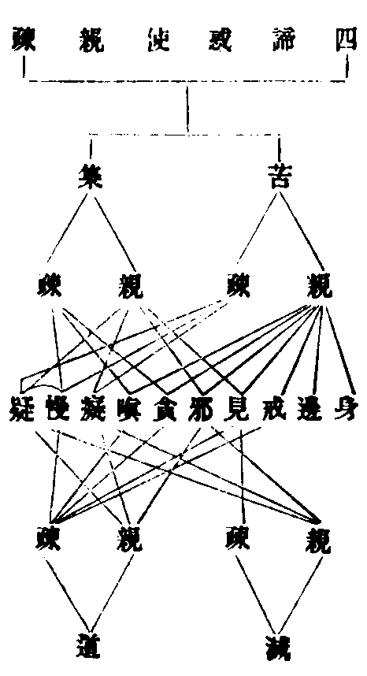
二明思惑者(止)故成八十一也。
此界繫思異俱生思及推利思也(俱生者與形俱生如託胎時女則於父起愛於母生嗔男則反此矣)九地者所依得名非謂土石貪嗔癡慢各有九品今總云耳以大三品分為九品不言疑者見道已斷此思既是障事從五塵起不歷四諦斷此惑時或直緣一真諦或四諦中隨緣一諦故止觀明見惑如四十里水思惑如十里水大經云初果所斷如四十里水其餘在者如一毛渧(謂迷四諦故如四十隨緣一諦重數甚多故稱十里又不橫起故稱一諦)。
上來見思不同(止)實有集諦。
諸文或以見惑名三結(身見戒取疑)或十六知見六十二見百八見或見思稱上下五分皆是教門隨根異說不可一準。
三滅諦者(止)滅非真諦。
滅者無為空滅義也對生明滅尚寄於修真理本淨體非造作故四諦外別立真理故真理如月苦集如雲道如却除滅如却已若云苦集是俗道滅是真乃約逆順而說逆真為俗順理名真也。
四道諦者(止)合為七科。
道以能通為義修聖道法通至涅槃或曰戒定慧或云六度或三十七品等皆教門開合被機不同若合成三學者戒攝三謂語業命定攝八四如意定根定力定覺正定餘屬慧攝或念根念力念覺正念通定通慧若以六度攝三十七具如輔行(七上二十一)又道品分四種一當分二相攝三約位四相生又通正通助通漏無漏亦漏亦無漏通大通小並如止觀第七(四)具釋(云云)又小唯正道大通正助今是小乘道品義當相生三四二五單七隻八若約位則八正對初果七覺對二果。
一四念處(止)觀法無我。
念是觀不淨等四處是境身受心法不淨有五一種子二住處三自相四自性五究竟受謂領納有三一苦受即苦苦二樂受即壞苦三不苦不樂受即平平之心行苦也無常則剎那不住無我則求我叵得。
二四正勤(止)三四如意足(欲念進慧)。
正則不邪勤則不怠如意足者念處正勤慧多定少今四是定定慧均等如心滿足故瑜伽亦謂如有足者往還如意欲念等者樂欲得定念持於定進求於定慧者止觀法界次第皆云思惟思惟觀境定力成故慧當作思亦恐此是有慧之定舉慧顯定亦通。
四五根(止)五五力。
能生名根深固不動力謂力用排障遣惑。
六七覺支(念擇進喜輕安定捨)。
一念覺了定慧平等揀擇真偽進修正行心得法喜輕利安適(止觀云除覺分除其浮動故得輕安)禪定現前捨諸妄念。
七八道(正見止正命)已上七科即是藏教生滅道諦明見。
四諦思無漏智語離邪妄業是淨業進異苦行定修無漏念正助法命非邪食五邪四邪如輔行釋。
然如前所列(止)更不再列。
藏通造六故狹別圓造十故廣四教迭論至圓最勝又藏別不即故劣通圓談即故勝四種四諦出大經聖行品止觀第一委釋欲略知者迷真有重輕故論生滅無生迷中有重輕故論無量無作又喻化城寶所各有迃直二通生滅如前無生者苦無逼迫相集無和合相滅無生相道不二相無量者苦即十界之果集即五住煩惱滅謂諸波羅蜜道即恒沙法門無作者陰入皆如無苦可捨塵勞本清淨無集可斷邊邪皆中正無道可修生死即涅槃無滅可證。
然四諦中(止)是故然也。
聲聞根鈍支佛則利故支佛以集為初門也慕果修因且據凡位若初果去則云帶果行因支佛不立分果乃云望果行因文義多途不可一槩又四諦果前因後且言三藏餘之三教義則不定或云苦集滅道或云集苦道滅。
略明藏教修行人之與位。
古師有言頓悟即佛無復位次之殊釋籤云約理則證法無名約事則不無諸位故知諸師偏從理說華嚴云隨其地位而得解脫(文)所以位者一者引物希向見賢思齊二者深識位次免生叨濫通明四教地位所出如玅玄第四委明下亦略示今藏教有四門一毗曇有門明七賢七聖二成論空門明二十七賢聖三昆勒論明雙亦門四車匿論明雙非門後二門大論雖指論文不度若空門雖勝於有門但二十七賢聖學人十八無學有九四教義云賢人有二聖有二十五(文二十七)而凡位不備今家不用(釋籤第五十八紙具引)今依有門明聲聞位者有三意一者凡聖位足二者佛法根本三者符順教旨四教義二(十七)云毗曇雖劣而是佛法根本是故佛去世後流傳利物且大乘經論破小用小多取毗曇有門少用空門故須略出毗曇有門賢聖之位(文)又(二初)云三藏四門雖俱入道而諸經論多用有門乃至圓教多用非空非有門(文)七賢如今外凡三位內凡四位七聖者亦不出四果一隨信行二隨法行即是利鈍入見道名(初果)如玅玄據成論十六心為見道即當初果若有門義當初果向三信解四見得前二轉入修道之名(二果三果)五身證四教義(十四)判是學人即三果升進妙玄乃以四果向攝六時解脫七不時解脫(四果)具如妙玄(二十四)廣解今不列七聖直作四果釋者名義顯故無他說也。
初明聲聞位分二(止)初五停心。
凡常也聖正也又名賢者善直亦曰鄰聖通論七賢皆具二義別論外凡為善直內凡為鄰聖停者止義住義修此五法止住五過心者四種一草木二肉團三積聚精要四慮知今是慮知之心若泛論之義通四教(妙玄第五以五停對五品此通圓也四念處第三明停心義通於通別二教矣)今是三藏聲聞助道四教義二云心既調停乃可習觀(文)又貪等是境不淨等是觀通論則定慧調適故曰停心妙玄別對則念處名慧停心名定若禪門第二以五停心即五門禪則義該大小通於凡聖菩薩等修今此助門諸文亦異併圖示之。
五停心諸文列次
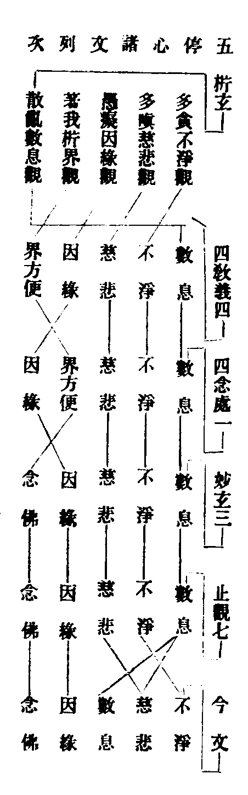
析玄不淨居初等者彼註文謂順三毒次第三毒後析果觀為著我重者(觀地水火風空識六界并十八界)散亂即隨煩惱故居第五今以數息安於嗔癡之間一往列耳四文皆以數息居首者順修禪人必先攝散入定故四教義二云今依禪門辨次第也(文)又諸文專以不淨數息居初者妙樂(六十)引俱舍云入道要二門不淨觀數息(文)然諸文列次義亦隨宜或五人各一或一人竪修或多或少不可一準四教義二云以病前後隨人不須定執前後次第也(文)析界與念佛互存沒者四教義二云開因緣觀出界方便代也界方便與小乘念佛相同亦破境界逼迫障(文)又四念處一云問此中何不用念佛停心答作五度門則不用作六度門即須用因緣對等分念佛對逼迫障(文)又此用治諸文不同今略括示。
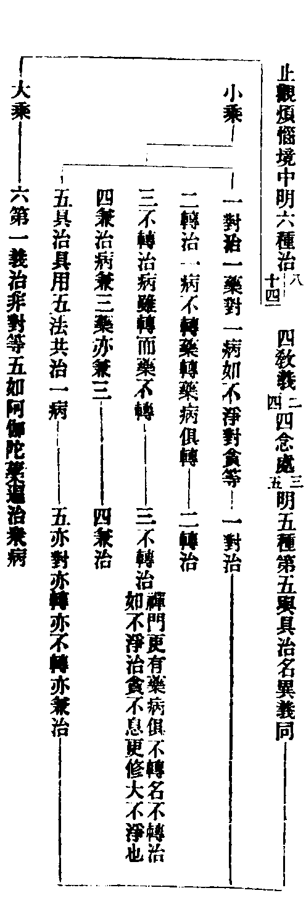
若禪門第四明六種治皆出摩訶衍論文相與止觀大同但兼治藥病俱兼兼五第五名兼轉兼不轉治與止觀異且兼至五與具治何別如五藥具治一病不同藥病俱兼也又兼轉兼不轉治彼文以難有解云只是兼治根性又能兼修轉不轉治故別開此又解云恐是具治異名即同四念處亦對亦轉等既兼轉與不轉亦具兼治復以兼收對五種義足名略義含與諸文一揆學者宜詳止觀第七(十三)明六度治六蔽亦有四種謂對治轉治兼治第一義治非五停義。
一多貪眾生不淨觀。
六識妄心於順情境上引起無厭故云多貪此之境觀禪門第四明三種一外貪男女身分互相貪著用九想治二內外貪於己他身而起貪愛用八背捨治三一切處貪資生五塵等物用大不淨觀治析玄上明四種一顯色謂青黃等作青瘀想二形色長短等形作壞爛想三妙觸自他身分細軟光澤作蛆蟲想四供奉祇承適意用死想治也須知此與念處觀身有異一正助不同彼正此助也二自他境別彼觀自身此想他境三假實觀異彼是實觀此明假想故故知此當前示外貪用九想觀也。
二多嗔眾生慈悲觀。
此觀若準禪門義通大乘境觀有三一非理嗔(欻起嗔心不問可否)修眾生緣慈(一切眾生如己眷屬)二順理嗔(人實來惱)修法緣慈(見一切法皆從緣生)三諍論嗔(著己所解)修無緣慈(能所一體慈即無緣)今小乘助觀只是於違情境上忿恨不已名曰多嗔當彼第一眾生慈耳法界次第明修慈悲喜捨四無量心今但慈悲析玄準俱舍論七周行慈輔行(九下五)依婆沙明九周行慈下當圖出大卛不過七境三樂七境者上親(父母師長)中親(兄弟姊妹)下親(朋友知識)中人(非冤非親)下冤(害下親者)中冤(害中親者)上冤(害上親者)三樂者析玄謂諸佛(上)菩薩(中)諸天(下)樂也輔行引婆沙三禪(上)四事(中)經行處(下)樂也今謂析玄三樂未知何據況聲聞助道與佛菩薩樂恐成過分宜以輔行為準蓋輔行引婆沙云問為與眾生何處樂答有說與三禪樂樂中勝故有說與四事樂已曾得故有說與曾經行處所有樂至所住處思惟令得(文九下五)。
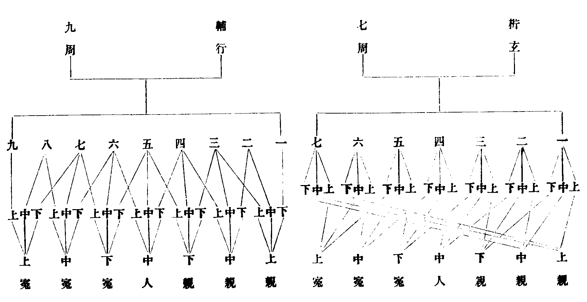
先親後冤者從易至難順心成觀析玄第六觀方與上親下樂第七方與上親中樂中親下樂者一者次第修觀未暇與故二者順七周次第每一番用觀先與上樂以為次第中下非要故在後時與雖前後境境皆三使冤親等以破嗔障輔行開為九周者一順從親至冤次第與樂不待六七却緣前親故二隨機宜樂所修不同故且聲聞自度何觀眾生施與他樂又復前境為得不得蓋為破障且爾運心其實前人實未得樂故析玄上云問自身有樂可施於他忽若自身無樂將何施與答自身若無樂可施即運心將餘諸天菩薩等樂而惠施之願彼冤親等眾生得受如是等樂故又涅槃疏云雖欲拔苦實未拔苦皆是虗言雖欲與樂實不得樂此是假說(文)又行者用觀當念冤讎如過去父母等方能冤親平等與樂廣如析玄上(云云)若大經十四梵行品明七境四番修觀疏第十開作兩番九周(指歸鈔第十二卷引)義屬別教菩薩所修行相於今非要故故略不論。
三多散眾生數息觀。
散者攀緣思慮與定相違息有四相有聲曰風結滯曰氣出入不盡曰喘(今依禪門口訣若禪門云結滯曰喘出入不細曰氣各有其義)不聲不滯出入俱盡曰息綿綿若存數之則定數風則散數喘則結數氣則勞(矣)數者從一至十不少不多令心不散禪門有四師一師數出息不急不脹身則輕利易入三昧二師數入隨息內斂三師出入無在俱隨便宜四師依四時用數今家正取第三師又不許出入俱數恐生病故梵語阿那波那此云遣來(入息)遣去(出息)即是三世諸佛入道初門通於三乘四教又用息明六妙門謂數隨止觀還淨今且為小乘助道耳。
四愚癡眾生因緣觀。
迷倒不了撥無因果故云愚癡須知著我計斷常并執性實三皆迷倒若明三世十二因緣則破斷常若論二世十二因緣(前十支現在後二支未來)即破我見若明一念十二因緣(即是一念無明造業乃至生死)即破性執此準禪門若毗曇大經則以界方便以破著我隨機不同也(六界十八界論開合如集解)三種十二因緣如妙玄三四教義二具明若束對三道如法數俱舍頌云。
三煩惱二業 七事亦名果 略果及略因
由中可比二(後際略果前際略因中間廣說可比知也補註十二引論具釋)
又云。
從惑生惑業 從業生於事 從事事惑生
有支理唯此(十二通名有支道理唯若此也廣如輔行三下十四釋)
又古頌云。
無明愛取三煩惱 行有二支屬業道
從識至受并生死 七事同名一苦道
若釋因緣之義如無明因能與行支為緣乃至生支為因能與老死為緣故(具如析玄上)此亦名十二重城亦曰十二棘園亦名十二牽連(如玄籤具釋)成論更有三因四緣(釋籤十引)俱舍及大論明六因四緣(輔行八下)與十二支但開合耳且因緣義甚深愚癡眾生何能觀耶禪門云非謂如牛馬等但聰明利根不得正慧邪邪心取理名為愚癡(文)此與支佛何異今助道破障略論三世支佛正觀破惑必須逆順兩緣百千萬世因緣等前引偈亦名果者七正是果何云亦耶如前指補注十二引論七以事為性故亦名果普賢觀亦通名十二苦事又輔行(三中十四)云雖有十二二三為性三謂惑業事二謂因果(文)略因略果前準俱舍略其數也釋籤三云亦三世俱名因果而支數多少不同者具如俱舍云略果及略因由中可比二(文)若準婆沙謂前世略果後世略因者義乃全略既有誠證今姑存之考釋籤意正取略數以消論偈。
五多障眾生念佛觀。
止觀乃云睡障念處乃云逼迫障禪門第四明三種障念三身治(彼通大乘今且明小乘助道也)障即惡業三種者一昏沉暗塞障(昏睡無記)念應身三十二相治二惡念思惟障(欲作五逆十惡等)念報身力無畏等治三境界逼迫障(身忽卒痛或見無手足火焚水溺等)念法身空寂無為治小乘當分亦有三身如光明玄若身對教前三各念一身謂生應報圓念法身諸身具足如輔行念處沒念佛明界方便如前已示。
二別相念處(止)中間例知。
於五陰境修四念處為破四倒合五為四也受則六根對六塵義兼內外故獨為一想行一向居內想起違從行陰造作故合為一夫道品有三十七獨明念處者有三意一如來遺囑二為成正行三陰境現前四教義二云念處是佛法入道要門雖有種種法門而佛遺言但囑依念處行道(文)又四念處一云若無念處慧行一切行法皆非佛法(文)止觀云大品云聲聞依四念處行道菩薩初觀色乃至一切種智章章皆爾故不違經又行人受身誰不陰入重擔現前(文五二)又此念處別明屬慧通亦有定輔行三云四境止心故名為定(文下十七)此總別相位應知四句四念處一云一境別觀別正是別相性念處二境別觀總三境總觀別此二是總相之方便四境觀俱總是總相念處(文法數具出四圖)初則一藥對一倒中間二句觀心漸熟或別於一境總用四觀或別用一觀總觀四境(今文略出此句闕前後二句)第四境觀純熟舉一俱得也若析玄準俱舍疏前三皆別相攝第四句方是總相位今依妙玄四念處初句是別後三皆總又上停心破障至今念處唯觀苦諦至內凡位方通觀四諦已玅玄四(二十三)云七賢位人明識四諦(文)彼且通舉應如今揀又慧俱無礙修性共緣三種念處念處名同義則有異至下釋四果中更說(云云)心行理外名外凡資粮者從喻立也欲越三有以此為資使五分法身不至夭喪。
三明內凡者(止)亦名七方便位。
漸見法性心遊理內身居有漏聖道未生故名內凡以定資慧修四諦觀加功用行故云加行聖道之本亦曰善根煖者從喻如鑽燧先煙春陽煖發得佛法似解也頂觀四諦轉更分明如登山頂明矚四方忍者於四諦中堪忍樂欲亦忍可義世第一者善根最勝世間第一具如妙玄四(二十四)乃析玄等此四觀行者俱舍頌云。
從此生煖法(從總相後生煖善根) 具觀四聖諦
修十六行觀(四諦為所緣十六行為能緣苦下四行苦無常無我集下四者集因緣生滅下四者滅盡妙離道下四者道正迹乘新譯諭苦下空名不淨滅下盡名靜道下云道如行出略如輔行三下析玄上解據頌只是觀於四諦而釋籤四云謂煖八諦十六行相有解云八字恐誤有云以上二界四諦體同通解稱八耳其實只觀欲界四諦此位有三品)
次生頂亦然(用觀同前亦有三品)
下中忍同頂(下忍徧觀八諦中忍縮觀明減緣行今云同頂者對後上忍唯觀苦諦一緣一行故云也釋籤云下中忍同頂者具觀四諦十六行相析玄亦云約初觀說至下更明減緣行義)
上唯觀欲苦 一行一剎那(此上忍合有一行二剎那心言一剎那此據滿說)
世第一亦然(上忍位中有二剎那一剎那盡餘一剎那在名上忍滿即入世第一今一剎那引入無漏故云亦然)
今通前圖示及相違文相。
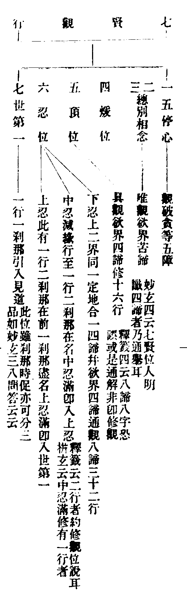
中忍減緣行者若徧緣八諦修三十二行唯名下忍謂初依欲界苦修四行次例觀上二界苦亦四行又觀欲集四行次上界集四行乃至上界道四行若從前觀從後減至上界道諦下唯修三行不用最後乘之一行名為一周復從前觀從後減至第四番減上界道諦下道之一行到此能緣既無所緣亦減此道行與緣同名與緣同減故云減緣必減行(據初一行)減行不必減緣(據後三行)第五番減欲界道下乘行乃至最初欲界苦下空行總有三十一周皆名中忍位唯留一行并所緣苦境入上忍位(此位所留一行隨行者所宜如釋籤第四云云)是則上四下三七緣與初行同名行與緣同減故釋籤四云七周減緣二十四周減行(文)據理實有七周減緣三十一周減行法數誤列今別圖之。
中忍緣行之圖
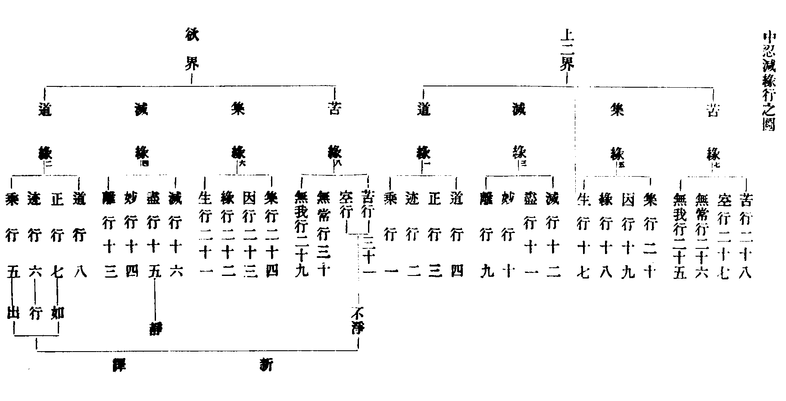
十六行義如輔行三下(十七)析玄上具釋又上二界合一四諦者同一定地故以欲界現前比上而觀故(析玄五義備釋云云)此則伏三界四諦下惑至發真時故上二界同名比法忍智等又十六行行只是觀門涅槃疏亦名十六諦者取諦審觀察義故又此減緣行妙玄三(八)合作八番者以行從緣但約八諦為八周也四教義二云中忍作十番縮觀者約後七諦以行從緣為七周開欲界苦下所減三行為三周總為十番妙玄八(二十八)曰三番縮觀進成上忍者以三界不出四諦亦以行從緣減後三諦故曰三番諸文詳略赴緣不同學者不必固執而自困也此四善根有何勝利俱舍頌云。
煖必至涅槃 頂終不斷善(釋籤四云忍位是進煖位是退頂是進退兩際猶如山頂（文）今云必至涅槃等者四教義二云問煖頂退者何云性地答此人雖造惡墮地獄一人受罪不復重入有性地善根故能得聖果文有云頂有三品上品不退)
忍不墮惡道(四教義二十二云下中二忍雖起煩惱惡業而不受三途猶受人天百千生若上忍成但有人天七生業在)
第一入離生(此一剎那即入見道故同見道離四趣生)
餘有難文略釋于此妙玄三云但作二心觀於一行如似苦法忍苦法智是名中忍(文)釋籤四云彼四心同一行一緣(文)二心者忍智二心雖在世第一後心發真而得在中忍位中義亦通修故云如似似彼世第一後心故釋籤云四心者緣行各二故云四心妙玄約一故故有二也有云二心者二剎那中忍位滿云四心即四行減至一行一緣二剎那在有云四心者籤云於上忍中亦修四行更有問答請撿詳之玄籤以難讀者更考又釋籤四引論明修煖法從欲界至無所有八地各九品并一具縛總七十三人是則煖法通於三界涅槃經却云如是煖法是色界法非欲界有須知能修之人通於三界所發煖法依色界定發也籤引評家云盡是色界法住定地法(文)涅槃疏作三義釋云一多用定發煖法觀從多為言二據中間三界皆能發於煖法而色界居中故言色有三據處為語色發煖易欲界則難(文)。
次明聖位分三(止)無學道(四果)。
初果見理破惑名見道二果去重慮緣真破思惑名修道四果惑盡名無學道然初果位從世第一後心苦忍真明於八諦下發八忍八智總十六心有門以十五心名見道為初果向至十六心是修道初果攝析玄空門以十六心名見道為初果二果去方屬修道宗計不同不須和會今家雖多用有門高麗師欲令初學易解且準空門註見道是初果也八忍八智者俱舍頌云。
前十五見道 見未曾見故 世第一無間
即緣欲界苦 生無漏法忍 忍次生苦智
次緣餘界苦 生類忍類智 緣集滅道諦
各生二亦然
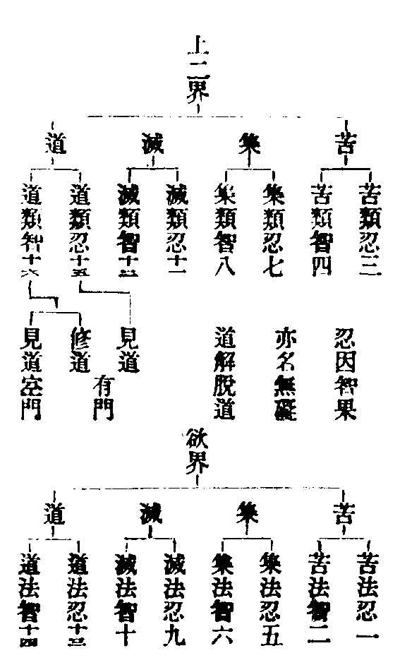
一須陀洹(止)又名聖位。
預流者預入聖道法流金剛云入流或翻逆流逆生死流也此斷八十八使婆沙論云二十八使見道斷餘六十使修道斷(文)先達解云有二種根性若等觀四諦者見道斷八十八使若不等觀四諦者見道中唯斷三界苦諦下二十八使餘三諦下見隨修道斷論中自定見隨修斷者乃是鈍根。
二斯陀含(止)故更一來。
此果斷欲界九品思惑前之六品於初果之後此果之前須論家家今先明欲惑潤七返生死次通示超次根性後別釋家家之義惑有麤細故分九品無漏智力故經七生私以偈括之。
初品潤二生 二三四各一 五六共潤六
第七斷三品(法數有圖輔行第六上解)
所以須七生者成論云於七世中無漏智熟如服蘇法七日病消如歌羅邏等七日一變如親族法限至七代如七步蛇四大力故行至七步蛇毒力故不至八步惑力至七道力故非八(文)次示根性應云三三斷四超住次超三超中開四北峯云考俱舍析玄輔行等只超次二義開為二斷四超也。
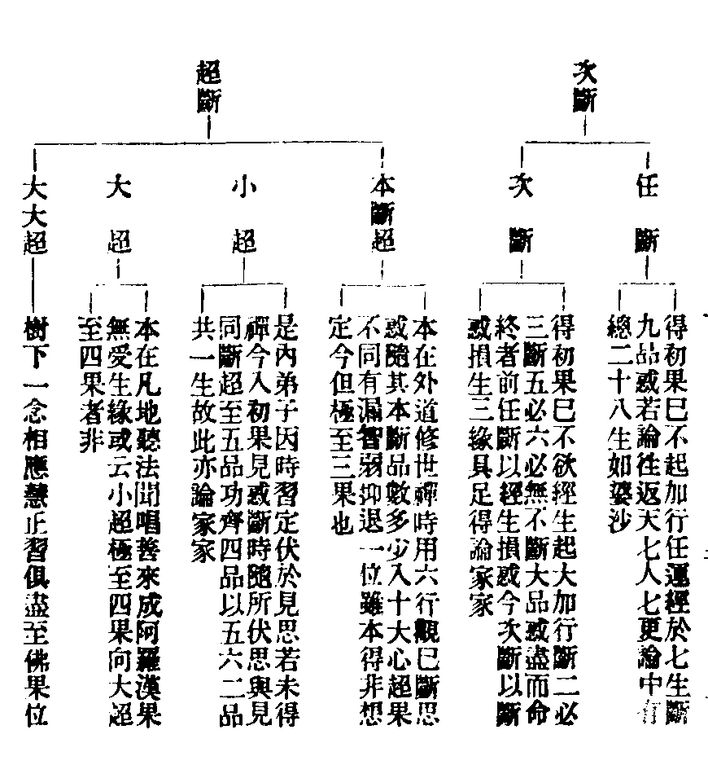
任斷之人非全無觀行但不及次斷勤加功行耳次斷者雖異任斷乃對超斷越次得名本斷者輔行(六上十)云本得非想即是已斷下八地思至十六心應名阿羅漢向但名阿那含者以凡地時有漏智弱但名那含若本斷九今名三向若七八品得名二果斷六品等名二果向斷五四等但名初果(文)須抑退者意令此人此生必定起無漏聖道故(文出俱舍)小超準止觀六釋只云十六心滿超能兼除欲惑諸品或三兩品(六九)及前明家家超至五品乃至八品輔行解云此之五品(婆沙小超)同四品故(俱舍次斷)隨其本斷(非本斷超只是隨其本時所伏而斷也)品之多少而得為家家種子(八品名種子)及以無學向果等名(文)故知止觀從淺而說考輔行意小超亦可超至四果又如止觀云十六心後即有一念超果至那含或超至羅漢(文)昔人誤定小超只到四向遂致曲解輔行向果二字謂之文倒乃四果向耳及定止觀或超至羅漢及是大超今所不取(前圖大超下注或云等乃是異說)然則小超既超至四果與大超何異須知小超凡地修觀伏於見思至十六心或淺或深超果不定若大超人不論修觀一呼善來直超四果又果本斷世禪斷思成三根性安得相濫大超根性昔人又分信法二行聞唱善來成阿羅漢即是法行十六心後超至四果即是信行(據前引止觀)無稽之論今亦不然若大超引物希向有教無人又後通教菩薩智利二乘及與圓人便成正覺非無超義但荷負眾生慈悲願重教門不說也具如止觀六云云家家者受生處不一也人中三洲天上六欲張王不同宮院等別故論天家家人家家不等家家平等家家(具如析玄下)俱舍頌云。
斷欲三四品 三二生家家(斷三品則損四生後三生在斷四品則損五生後二生在)
斷至五二向(斷至五品名二果向)斷六一來果
斷七或八品 一生名一間(斷至七品或八品猶有一生間隔)
此則第三向 斷九不還果(七八為三果向斷九方得三果)
此論頌一卷八品世親造唐奘譯今出第六賢聖品更有俱舍論三十卷九品造者譯者同上皆名新譯真諦舊譯俱舍論十二卷及論釋十二卷輔行所準正是新譯若止觀超斷五品名家家乃準婆沙論也欲惑之體是正三毒貪嗔癡慢在癡攝七生斷者觀有明暗惑有厚薄餘如上說三緣者一斷惑緣能斷三品揀異一品二品五品者二成相緣治彼三四成無漏根揀異本斷未成無漏三受生緣更受欲界三生二生揀異即生般涅槃者三緣闕一非家家義俱舍論云即預流者進斷修惑若三緣具轉名家家(文重加類節)若斷七八亦具三緣轉名一間此約次斷若小超人亦論家家具三緣否有云小超三緣不具(精英集)進法師云論雖不說義具三緣止觀六既云十六心後即有一念超至那含(文)驗知小超斷見惑時兼發一念無漏之智即成根緣餘二例說若爾與次斷何別小超一念兼發次斷必論加行況次斷根性無超越義自可揀也前所引頌為頌次斷為頌超斷原夫止觀驗知頌文唯頌次斷故曰此次斷義(指所引俱舍)與今文同(會同小超得云家家)轉贊云既曰預流者進斷修惑則頌次斷明(〔矣〕舊稱無家家以判頌有功也)昔交師謂頌小超雜編破之謂頌次斷或超次俱頌後復多說今並四直之學者請勿廣謄增無益之弊輔行云若超若次進斷三四(文六上)得非小超亦至四品那彼釋家家三二處生故以五品功齊四品而總言耳非謂小超剩至四品止六引婆沙云次斷五品名斯陀含向超斷五品名家家次斷六品名斯陀含果超斷六品名一往來次斷七品八品名阿那含向超斷八品名一種子(文俱舍名一間婆沙名一種子有一品惑在故也)且次斷五品名二向超斷五品名家家又斯陀含與一往來那含向與一種子其義無別何分超次精微集云超次對辨皆有某意初對為顯超次有異次人斷五必六未受家家之名小超五品有命終者故名家家也中後二對為顯超次是同中則俱名二果並號一來華梵互舉後則影略互顯名三向及一種子(文)憲章謂咎分過德用有抑揚未必全爾不暇評也止觀六明小超云或三兩品即是家家輔行云或三兩品名家家者應云三四或恐文誤或婆沙不同(文)準諸文說乃恐文誤或論中亦有斷兩品論四生家家者故云或婆沙不同也雜編有云亦可斷欲一二品五四生家家玅玄四云斷欲界一品煩惱乃至五品皆是於向亦名勝進須陀洹約此論家家(文)文意既以一品乃至五品得論家家霅川之說或未為失但恐教門定故不應說也次斷之人必斷大品應唯三品何至四耶又斷第八何不至九斷大品已更進斷小品有何不可不至九者有得果越界二義具如輔行(六上)任斷七生何義不立家家之名有云教門方便立家家者為令聖者畏經生故速得證果任斷根性不畏經生故不說也。
三阿那含(止)進斷上八地思。
此果斷欲界下三品思盡進斷上八地思取證四果而般涅槃(此云滅度)就此釋般那含此名從略乃是般涅槃之阿那含也舊對家家稱為般般義無所準又此且論有餘涅槃俱舍論云般涅槃者謂有餘依有餘師說亦無餘依此不應理(文重加類節)止觀六云次斷初禪初品至非想第八品凡七十一品悉名阿羅漢向六種那含位在其中(文)輔行六(上六)引大論俱舍釋之大論七種一中般二生般三行般四不行般五上流般(色界)六現般(欲界)七無色般俱舍七種前五如大論第六却取無色般(輔行脫一無字乃云但取色般并五為六)第七方立現般荊溪謂俱舍不立現般指七種中第六不立耳非謂論文不明現般若大論中則現般第六據二論六種一立一不立對釋止觀故有此言舊謂那含唯此一難自報慈堯法師釋出莫不承用無他論也但諸文種數多少今准俱舍三七種圖示然後對揀頌云。
此中生有行 無行般涅槃 上流若雜修
能往色究竟 超半超徧沒 餘能往有頂(餘字指不雜修有頂是非非想處)
行無色有四 住此般涅槃(輔行六上析玄上具釋論頌七種先色次無色後欲般今圖順三界次第覽者悉之)
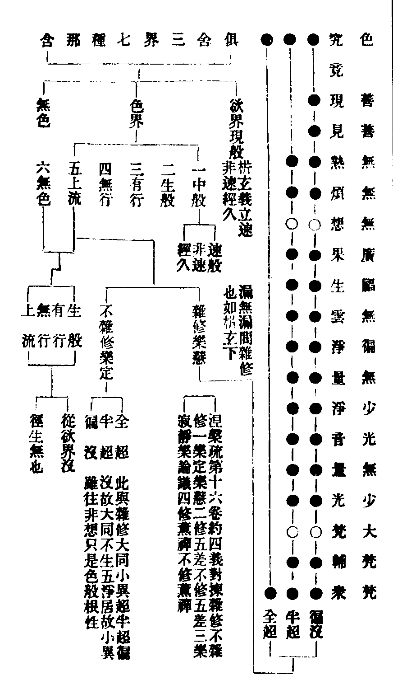
大論七種名同俱舍列次少異更不再出俱舍論云行無色者差別有四謂在欲界離色界貪從此命終生於無色此并前五成六不還復有不行色無色界即住於此現般涅槃并前六為七(文重加類節)色界徧沒只十六天大梵是天主我慢無想乃界道所居故聖者不生此二天也俱舍復有九種即於色般合五為三有行無行皆生般攝即開三為九頌云。
行色界有九 謂三各分三 業惑根有殊
故成三九別(釋籤五析玄下引論備釋)
諸文或云五種獨指色般或云八種三界七中加不定般(補注十四初引婆沙三界般中徧有不定進老示不定相乃約期心欲界便般涅槃或未能克却生上界而取證也或期生上界忽發宿習欲界即證色無色準說)雜心論七種玅玄所用於色界五初開中為三(速般非速般經久般)并後四成七毗曇有一萬二千九百六十種般如釋籤第五具示色界中般者初離欲界生色界時厭苦心切即在中有而般涅槃故屬色攝若至色界上生餘天雖有中有不得論般為無宿習厭苦力故(如析玄下)無色不立中般者指歸鈔(十八)云經云無色眾生無有中陰者毗曇法中說除四空餘一切處定有中陰以無色界無處所故(文)又俱舍明隨於何處得無色定於命終時即生無色前圖中引五差者謂下中上上勝上極輔行六(上三)析玄下(十三)委釋行相由此五禪生五淨居又樂論議者恐就下界修觀時說非生淨居有論議也以二禪上無語言故(文)。
四阿羅漢(止)又名孤調解脫。
此位上八地七十二品思俱盡四智已圓(我生已盡梵行已立所作已辦不受後有)無法可學名無學果亦名究竟(如析玄下)阿羅漢者文句一云或言無翻含三義故淨名疏十引智論釋云一殺賊從破惡以得名二不生從怖魔以受稱三應供因乞士以成德(文因果對釋也)多含不翻乃今家正意以三義翻之乃順古耳若釋比丘因名乞士等對舉果名蓋欲顯大比丘之階位也(如法華文句及觀經疏)又前標聲聞通凡聖位若阿羅漢局第四果此位所修三昧一名金剛二名重空三名電光(上二名如妙玄第四電光如止觀第九電光義通初果金剛三昧通前五種羅漢重空別在不動羅漢所修)此果別號有二種三種六種九種及果性退不退今歷示之先明二種。
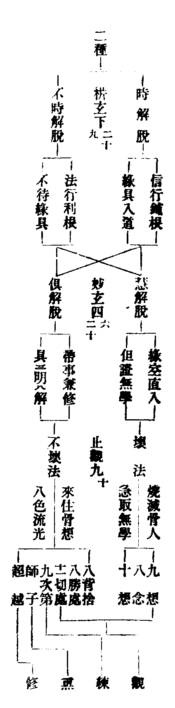
初時不時從緣得名次慧俱約觀立號三壞不壞依境受稱也或准正理論以時不時歒對慧俱若准玅玄四(二十六)及四教義二(十六)信法各二不得滅盡定者但是慧解脫得滅盡定者名俱解脫舊云歒對乃從正從多各對則旁正兼舉以信行亦有帶事兼修法行亦有緣空直入若壞不與慧俱同假名集准經論祖文列十義揀判慧俱後人束作五義一約性共慧人修性念處俱人修共念處(四教義二)二約正助慧人正道斷結俱人兼修助道(光明句中四教義二)三約事理直緣真理名慧脫帶事兼修名俱脫事者一帶根本四禪俱人亦依世禪修六行觀故二帶無漏禪慧人但至觀禪俱人具修觀練薰修(止觀第九婆沙亦有少分慧脫全分慧脫此有三根全無四禪下根也能修一禪至四禪中根也能修無漏禪至九想十想上根也俱人能修一二三禪下根具四禪中根修觀練薰修上根也妙樂二云四禪一切羅漢並得次觀等四俱解脫人方乃具足)三得滅盡定(如妙玄四二十六)已上三事俱人兼得也四約神變慧人十四變化俱人作十八變(文句二)五約三明八解俱人則具慧人則無若輔行云通通於六明唯局三(天眼宿命漏盡三也)諸羅漢皆能得之(文)此有闕具之義婆沙云若有一明二明名慧解脫(文)准知俱人三明具足次明三種。
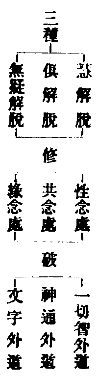
(性念處者亦名自性念處緣理斷結除自性過共念處者正助合修緣念處者緣佛三藏及世間文字所緣處廣也具如四念處一四教義二俱舍亦有三種羅漢各論三念處)。
慧俱略如上無疑者三藏教法四韋陀典天文地理一切通達故曰無疑四教義二云問不應別說無疑九種羅漢無此名目答此出智度論明欲結集法藏集千羅漢皆得共解脫無礙解脫也(文)既是大論開出在佛世時俱人所攝佛世且明自行入道是故諸文只云慧俱(六種九種皆無此名若集論明六種中有無疑法者與不動法名異義一非今無疑)釋籤五(十九)云得滅盡定但名俱解脫人以未修緣念處終非無疑解脫也(文)故知無礙乃俱人中勝者耳小大言之慧俱並小無疑乃名大阿羅漢妙樂一(三十一)引中阿含舍利弗問五百比丘幾三明幾俱解脫幾慧解脫佛言九十人三明九十三俱解脫餘但慧解脫荊溪云三明者即無疑解脫(文)須知三明是俱人得取其勝者復云無疑也後明六種附揀七種及列九種然後約六種明果性退否。
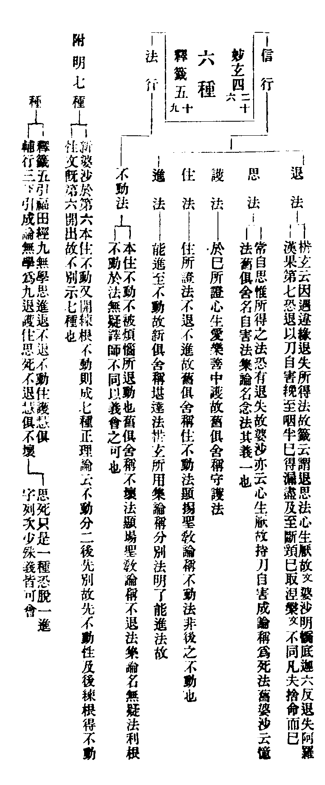
六種約根性慧俱約觀行九種乃根性觀行兼舉耳又九是空門二十七賢聖中之無學為答福田長者所問顯福田之多赴機生善故又六種明二加行差別如析玄(下二十九)須者撿之果性退否者俱舍頌云。
阿羅漢有六 退法至不動 前五信解生(信行轉入修道名信解)
總名時解脫 後不時解脫
從前見至生(見得亦名見至亦是法行轉入之名) 有是先種性
有後練根得(六種羅漢有先世種性定者有後來修練根性轉劣成勝者如本是退法練成思法乃至不動或思練成護乃至進練成不動唯初退法是先種性無練根者又練根通資加修三位唯除見道以時速不能轉根故)
四從種性退(第一退法最下無處可退第六利根不退唯中間四種根性有退如第二退為第一乃至第五退為第四又此退性乃是練根非先定根性也)
五從果非先(前五種從無學果退居學位第六則不退也亦是練根論退非先種性也非先二字總頌果性二種退者若析玄辨果退非先中云如第三護法若先是退法至果練成護法則有果退若先是思法後練成護法則無果退乃至結云即知果退唯約先是退法若先是思法等四性必無果退（文）此似只就退法根性論之更宜詳考)
非先有退者 但據餘四說(果退雖在前五若論非先唯中間四第一退法雖無練根不論性退不妨亦有果退之義)
不動盡智後
必起無生智(第六於盡智後能起無生智所以果性皆不論退餘五有退以不起無生智故本住不動練根不動皆無退義)
餘盡或正見(五種盡智後或但起正見)
此應果皆有(盡智後正見六種應果皆有)
已上頌語取析玄意略註欲學者便於憶持更詳彼文可也且羅漢見思已盡已證無學所以有退者考論祖語(妙玄四（二十六）止觀九止觀九（十二）上十五)蓋由信行慧解脫人不修事禪不得滅盡定或世智斷惑但得盡智不得無生智遇著違緣還起煩惱故有退也(違緣者一長病二遠行三諫諍四營事五多讀誦又大經明五緣一樂多事二樂說世事三樂睡眠四樂近在家五樂多遊行)又析玄謂非先種性者但是無學一道所成不得堅固故有退若是先種性由學無學二道資持堅固故無退(彼文更果退性不退等四句分別)然前五種未必全退有遇違緣者故有退耳故輔行(九上十五)云然慧解脫亦不併退有退義故說有退(文)又退者非久輔行云問退經幾時答經少時乃至自不知退若自知退當修勝進方便復次彼煩惱現在前時心生慚愧速作方便如明眼人晝日平地顛蹶尋即還起(文)釋籤云此生之中必得無疑極至臨終亦得無學故(文五十九)或曰前時不時各有慧俱不動既從時解脫生得非六種皆有退義耶答慧人未必一向論退恐只鈍根有漏智斷遇違緣者退今復圖示。
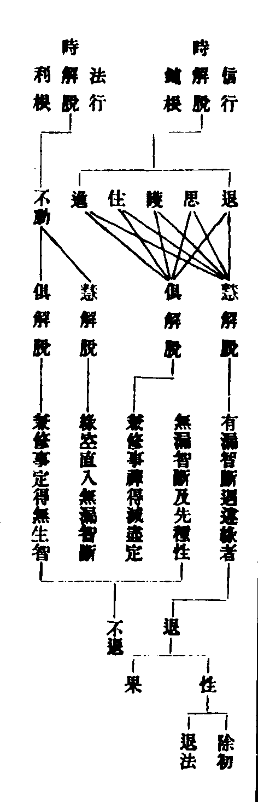
六種論退局第四果通辨四果退不退者析玄引三家一薩婆多云初果不退後三果退二大眾部云前三果退第四不退三經部宗云初四兩果不退中間二果有退(廣如彼文)彼但註云三師難定今恐成諍略為和融輔行(九上十五)引娑沙云阿羅漢退牽二三果退猶如井砂上下有甎中間唯砂上甎若頹從上至下其中間砂豈得不頹四果如上甎二果如中砂初果如底下(乃至)初果之前更無有果若彼退時更無住處(文)不可聖退為凡夫也合彼初師然見道既有不等觀四諦如婆沙云二十八使見道斷餘六十使修道斷(先斷三界苦下惑見)見既分盡果理未圓例如身子六住尚退後三果中斷惑之智通漏無漏是則四果俱退俱不退三師之說說皆無妨礙子縛者見思煩惱果縛者五陰報質也灰身滅智究竟無餘然身子入滅而均提答佛何云五分法身不滅耶釋籤(十)云無作之業至未來世名為不滅非常住不滅(文)無作業者乃功薰耳(云云)聲聞自度故名孤調斷欲九品立二三果上八地思唯一無學者止觀云如險處多難多須城壁欲界多難多果體息也(文六七)故知上界定地少難唯立一果若爾七聖中二為見道(信行法行)二為修道(信解見得)二為無學道(時解脫不時解脫)復以身證對四果向者何耶有云位隣無學將斷非非想惑特立此位如別圓之有等覺也今謂空有二論設位不等教門方便多少隨宜耳妙玄明身證得滅盡定約似證也成論云不得滅盡定名身證者對四果真證奪而言之。
略明聲聞位竟。
天台四教儀備釋上